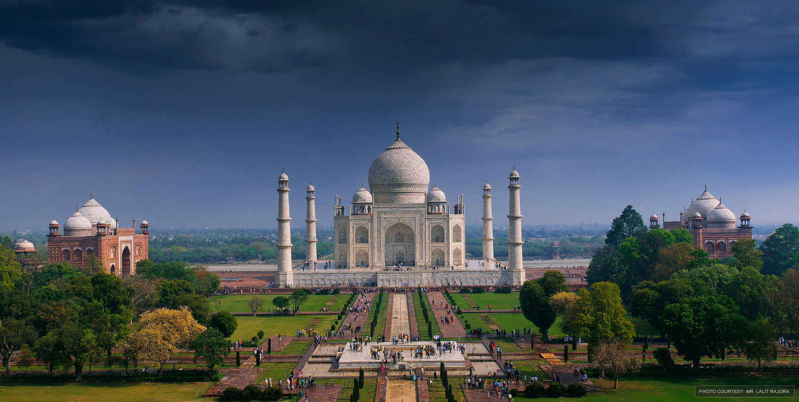
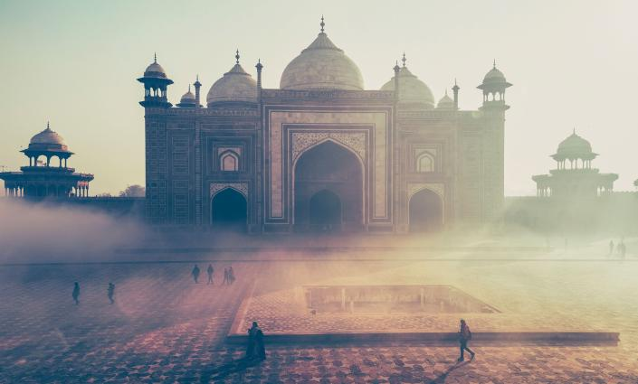

Histoire du Taj Mahal
Proche d’Agra, à 200 km au sud de New Delhi, le Taj Mahal, que les Indiens surnomment le "Monument de l’amour" est un mausolée de marbre blanc construit entre 1631 et 1653 sous les ordres du Shah Jahan dans le but d'abriter la tombe de son épouse,
Mumtaz Mahal. C'est un monument emblématique de l'Inde. Le Taj Mahal est en fait un ensemble de bâtiments, de jardins, de plans d'eau et de fontaines à la symétrie
parfaitement organisée contenus dans un terrain rectangulaire de 580 par 305 mètres. Il comprend deux mosquées, dont une est inutilisée car elle n'est pas orientée vers la Mecque,
symétrie oblige, trois portes de style iranien, 3 bâtiments de briques rouges, une fontaine centrale et 4 plans d'eau organisés en croix.

Le Taj Mahal est considéré comme le plus grand joyau architectural de l’art indo-islamique. Le Taj Mahal est dessiné selon un plan parfaitement symétrique,
conçu pour faire plus particulièrement ressortir la symétrie bilatérale par rapport à un axe central sur lequel sont disposés les principaux éléments.
Aujourd'hui le Taj Mahal est visité par 4 millions de visiteurs par an, ce qui en fait le monument le plus visité d'Inde. Il est aussi le monument le plus connu d'Inde,
et son symbole, comme la Statue de la Liberté l'est pour les Etats-Unis, la Tour Eiffel pour la France.
